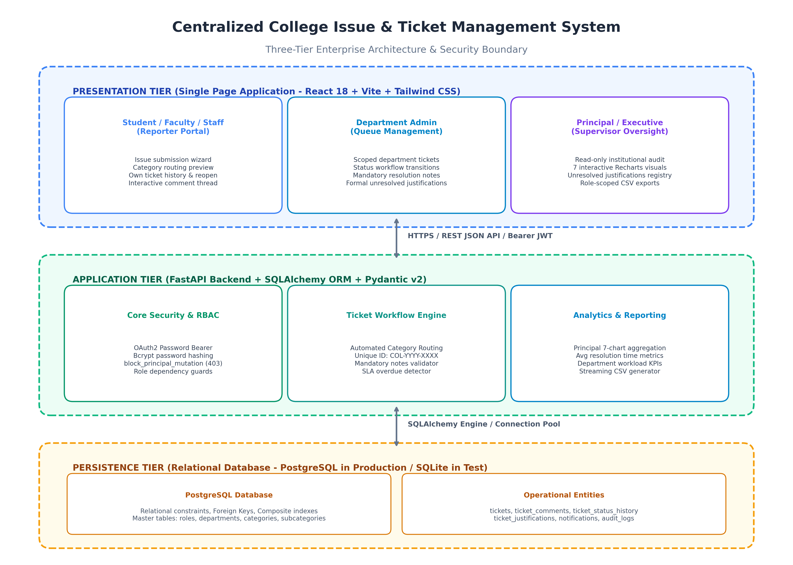
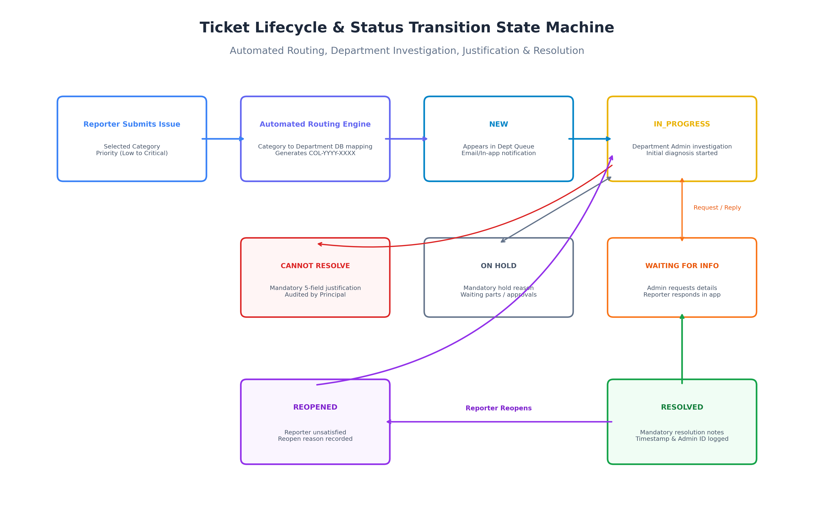
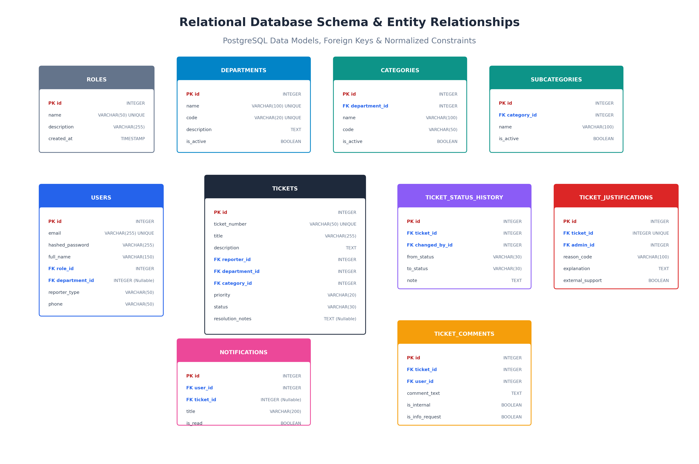

An enterprise full-stack web application empowering students, faculty, and staff to report campus issues, routing tickets automatically to authorized departments, and providing executive supervisory intelligence to the Principal.
Complaints sent over uncoordinated emails and physical paper slips. No tracking IDs, unclear departmental ownership, forgotten requests, and zero oversight into recurring campus maintenance issues.
Category-driven automated routing directly into authorized department inboxes. Unique tracking IDs (COL-YYYY-XXXX), mandatory resolution audits, structured unresolved justifications, and real-time executive analytics.
STUDENT / FACULTY / STAFF
IT, FIN, HR, INFRA, ACAD, ETC.
STRICTLY READ-ONLY SUPERVISOR
Clean separation between client presentation, application routing/security, and relational persistence.

Transparent lifecycle state transitions backed by immutable audit history logging.

Full normalization, foreign key constraints, composite indexes, and relational integrity.

When an issue cannot be resolved, departments must submit a structured 5-point formal justification:
All critical business workflows and security restrictions verified through automated unit tests:
[PASS] 01: All sample user accounts and bcrypt credentials verified.
[PASS] 02: Ticket COL-2026-0001 created and automatically routed to IT Administration.
[PASS] 03: Status transitioned to IN_PROGRESS and audit trail recorded.
[PASS] 04: Mandatory resolution description validated.
[PASS] 05: Department isolation verified: Finance Admin cannot modify IT tickets.
[PASS] 06: Unresolved issue formal justification submitted, linked, and status updated.
[PASS] 07: Principal backend mutation restriction strictly enforced (403 Forbidden).
[PASS] 08: Principal real-time analytics aggregation and visualization data verified.
[PASS] 09: Role-filtered CSV exports verified.
Ran 9 tests in 4.285s — OK (All Passing)